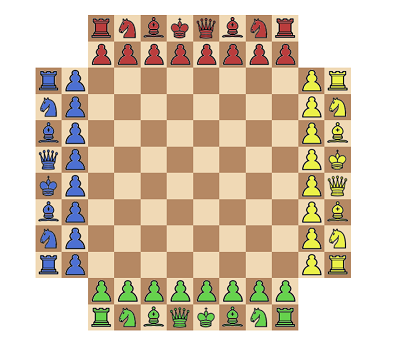
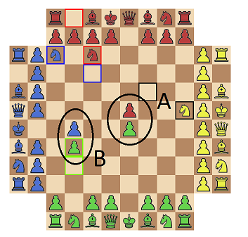
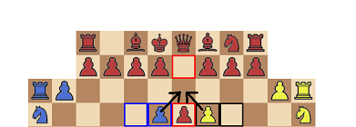

The rules of chess4four
Ok,
in this game we will play chess with 4 players,
at the same time,
on the same board :)
The Board:
This is the board:

A few notes compared to other forms of chess with 4 players:
- it's regular chess, so no promotion in the middle of the board
(you can promote if you reach the opposite side however
(which is highly unlikely, but it is implemented)).
- another difference with other forms of chess with 4 players is:
there is no "buffer row" in front of your army:
the right and left pawn can take the left and right (respectively) pawn
of the right and left opponent (also respectively)
(and thus freeing the towers early in the game)
(the towers do have a row of eager pawns to look out for
but they can be used earlier in the game compared to regular chess).
Castling
Castling is also supported with the
rule from wikipedia
(i.e. you are allowed to have been check and still castle).
Direction
The players each play forward, so, for the pawns
(the only pieces that have a sense of direction
when it comes to legal moves)
this means:
- situation A: both pawns block each other
- situation B: green is blocked but blue can move ahead

En passant
Here I'm quite proud of (pardon my braggin').
This is where a lot of (some nightly) hours of work showed off:
en passant:
having 4 directions makes the en passant move (which isn't your vanilla chess move)
3 times as difficult:
- two (opposing) pawns can possibly perform en passant on the same pawn (fig. C.)

- in rare conditions (sometimes it's a burden to be a perfectionist)
one single pawn can capture
two different pawns of two different opponents
with one and the same en passant move!!! (fig. D.)
Promoting
Promoting is possible if you reach the other side of the board
(the opposite side, so red when it arrives at the green side,
green at the red side, yellow at the blue side, ...)
For sake of simplicity you can only promote to a queen or knight.
A queen can do the same moves as a tower or bishop
so we didn't see the point in providing this nuance...
Dubious player
If there is only the three of you you can still play.
In fact you can also play with two (against two robots)
(and you can play alone from the start screen against 3 bots
(but that isn't much fun (the bots are quite weak))).
With three you can opt for a robot player,or a so-called "dubious player":
the dubious player is controlled by a different player each turn
if you lose (by mate or pat (or resign))
you can still choose to control Dubious when it's your turn to do so.
For now, when 1 human player and only Dubious remain in a game Dubious resigns
(see also survey).
You cannot resign from Dubious or let Dubious resign
(unless you resign from the game)
(if you resign from the game you can choose whether you still want to control Dubious,
if you choose to continue controlling Dubious
you can (for now) not come back from this decision.
Some thoughts
For players unfamiliar with playing with 4 players this is a real brain teaser.
There is so much information and things you overlook when playing with 4.
And with three (and Dubious) you see a different viewpoint from time to time
(which also doesn't help...).
If you have 4 medium level players things can get really complicated real quick.
For example: if you are strong with the bishops imagine what you can do in this game:
normally people expect attacks from the back or front (of 1 opponent)
disorientated about having a left and right opponent a bishop can strike
from 2x more directions, hidden in the chaos of the board,
sniping when the opponent least expects it...
Well, I hope you will enjoy the game,
thanks for checking it out (pun intended)
and it would really be nice if you could take the time to fill in the survey
most importantly: keep having fun!!!
The Chess4four team.